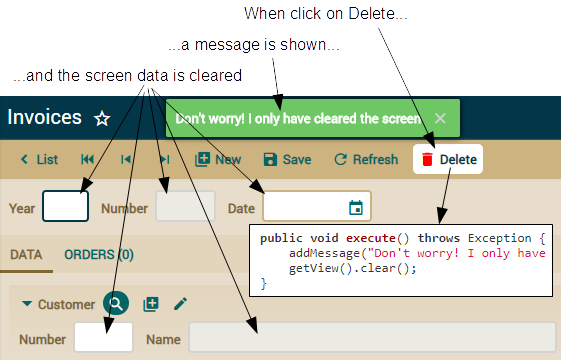
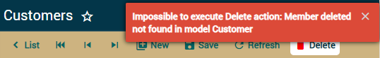

Lesson 24: Refining the standard behavior
Course: 1. Getting started | 2. Basic domain model (1) | 3. Basic domain model (2) | 4. Refining the user interface | 5. Agile development | 6. Mapped superclass inheritance | 7. Entity inheritance | 8. View inheritance | 9. Java properties | 10. Calculated properties | 11. @DefaultValueCalculator in collections | 12. @Calculation and collections totals | 13. @DefaultValueCalculator from file | 14. Manual schema evolution | 15. Multi user default value calculation | 16. Synchronize persistent and computed propierties | 17. Logic from database | 18. Validating with @EntityValidator | 19. Validation alternatives | 20. Validation on remove | 21. Custom Bean Validation annotation | 22. REST service call from validation | 23. Attributes in annotations | 24. Refining the standard behavior | 25. Behavior & business logic | 26. References & collections | A. Architecture & philosophy | B. Java Persistence API | C. Annotations | D. Automated testingTable of contents
However, man shall not live by business logic alone. A good behavior is desirable too. Inevitably, you will face that either you, or your user, crave behavior deviating from, or adding to, the standard OpenXava behavior for certain parts of your application. To make sure your application is comfortable and intuitive for the end user refinement of the standard behavior is needed.
Application behavior is defined by the controllers. A controller is simply a collection of actions, and an action is what executes when a user clicks a link or button. You can define your own controllers and actions and associate them to modules or entities, and in that way refine how OpenXava behaves.
In this lesson we'll refine the standard controllers and actions in order to customize the behavior of your Invoicing application.
Custom actions
By default, an OpenXava module allows you to manage your entity in a way powerful and adequate enough to perform the most common tasks: adding, modifying, removing, searching, generating PDF reports, exporting to Excel (CSV), and import data to entities. These default actions are contained in the Typical controller. You can refine or enhance the behavior of your module by defining your own controller. This section will teach you how to define your own controller and write custom actions.Typical controller
By default the Invoice module uses the actions from Typical controller. This controller is defined in the default-controllers.xml located in the OpenXava/xava folder of your workspace. A controller definition is an XML fragment with a relation of actions. OpenXava applies the Typical controller by default to all modules. You can see its definition:<controller name="Typical"> <!-- 'Typical' inherits all actions -->
<extends controller="Navigation"/> <!-- from 'Navigation', -->
<extends controller="CRUD"/> <!-- from 'CRUD' -->
<extends controller="Print"/> <!-- from 'Print' -->
<extends controller="ImportData"/> <!-- and from 'ImportData' controllers -->
</controller>
<controller name="CRUD">
<action name="new"
class="org.openxava.actions.NewAction"
image="new.gif"
icon="library-plus"
keystroke="Control N"
loses-changed-data="true">
<!--
name="new": Name to reference the action from other parts of the application
class="org.openxava.actions.NewAction" : Class with the action logic
image="images/new.gif": Image to show for this action,
in case "useIconsInsteadOfImages = false" of "xava.properties"
icon="library-plus": Icon to show for this action, this is by default
keystroke="Control N": Keys that the user can press to execute this action
loses-changed-data="true": If the user clicks on this action without saving first
the current data will be lose
-->
<set property="restoreModel" value="true"/> <!-- The restoreModel property of the action class will
be set to true before it's executed -->
</action>
<action name="save" mode="detail"
by-default="if-possible"
class="org.openxava.actions.SaveAction"
image="save.gif"
icon="content-save"
keystroke="Control S"/>
<!--
mode="detail": This action will be shown only in detail mode
by-default=”if-possible”: This action will be executed when the user press ENTER
-->
<action name="delete" mode="detail"
confirm="true"
class="org.openxava.actions.DeleteAction"
image="delete.gif"
icon="delete"
available-on-new="false"
keystroke="Control D"/>
<!--
confirm="true" : Ask the user for confirmation before executing the action
available-on-new="false" : action is not available when the user is creating a new entity
-->
<!-- More actions... -->
</controller>
The actions are shown by default in both list and detail mode, although you can, by means of mode attribute, specify that the action should be shown only in “list” or “detail” mode.
Refining the controller for a module
To start of, we will refine the delete action of the Invoice module. Our objective is to modify the delete procedure so that when a user clicks on thedelete button the invoice will not be removed but instead simply marked as removed. This way, we can recover the deleted invoices if needed.

The previous figure shows the actions from Typical. We want all of these actions in our Invoice module, except that we're going to write our own logic for the delete action.
You have to define your own controller for Invoice in controllers.xml file of the xava folder of your project, leaving it in this way:
<?xml version = "1.0" encoding = "ISO-8859-1"?>
<!DOCTYPE controllers SYSTEM "dtds/controllers.dtd">
<controllers>
<controller name="Invoice"> <!-- The same name as the entity -->
<extends controller="Typical"/> <!-- It has all the actions from Typical -->
<!-- Typical already has a 'delete' action, by using the same name we override it -->
<action name="delete"
mode="detail" confirm="true"
class="com.yourcompany.invoicing.actions.DeleteInvoiceAction"
icon="delete"
available-on-new="false"
keystroke="Control D"/>
</controller>
</controllers>
Writing your own action
First, create a new package called com.yourcompany.invoicing.actions. Then create a DeleteInvoiceAction class inside it, with this code:package com.yourcompany.invoicing.actions; // In 'actions' package
import org.openxava.actions.*;
public class DeleteInvoiceAction
extends ViewBaseAction { // ViewBaseAction has getView(), addMessage(), etc
public void execute() throws Exception { // The logic of the action
addMessage( // Add a message to show to the user
"Don't worry! I only have cleared the screen");
getView().clear(); // getView() returns the xava_view object
// clear() clears the data in user interface
}
}
ViewBaseAction has a view property that you can use from inside execute() with getView(). This object of type org.openxava.view.View allows you manage the user interface. Above we cleared the displayed data using getView().clear().
We also used addMessage(). All the messages added by addMessage() will be shown to the user at the end of action execution. You can either add the message to show or an id of an entry in i18n/Invoicing-messages_en.properties.
The following figure demonstrates the behavior of the Invoice module after adding your custom delete action:

This is of course mock behavior, so let us now add the real functionality. In order to mark the current invoice as deleted without actually deleting it, we need to add a new property to Invoice. Let's call it deleted. You can see it:
@Hidden // It will not be shown by default in views and tabs
@Column(columnDefinition="BOOLEAN DEFAULT FALSE") // To populate with falses instead of nulls
boolean deleted;
We use @Column(columnDefinition=) to populate the column with falses instead of nulls. Here you put the SQL column definition to send to the database. It's faster that do an update over the database but the code is more database dependent.
We are now ready to write the real code for your action:
public void execute() throws Exception {
Invoice invoice = XPersistence.getManager().find(
Invoice.class,
getView().getValue("oid")); // We read the id from the view
invoice.setDeleted(true); // We modify the entity state
addMessage("object_deleted", "Invoice"); // The "deleted" message
getView().clear(); // The view is cleared
}
But we left a loose end here. The "delete" button remains in the view after deleting the entity, that is, when there is no selected object, in addition if the user clicks the button the search instruction will fail and a somewhat technical and unintelligible message will be shown to our helpless user. We can refine this case by not showing the button, such as when we click the New button. Note the small modification of the execute():
public void execute() throws Exception {
// ...
getView().clear();
getView().setKeyEditable(true); // A new entity
}
Now that you know how to write your own custom actions, it's time to learn how to write generic code.
Generic actions
The above code for your DeleteInvoiceAction reflects the typical way of writing actions. It is concrete code directly accessing and manipulating your entities.But sometimes you have action logic potentially to be used and reused across your application, even across all your applications. In this case, you can use techniques to produce reusable code, converting your custom actions into generic actions.
Let's learn these techniques to write generic action code.
MapFacade for generic code
Imagine that you want to use your DeleteInvoiceAction for Order entities too. Moreover, imagine that you want to use it for all the entities of the application having a deleted property. That is, you want an action to mark as deleted instead of actually removing from the database any entity, not just invoices. In this case, the current code for your action is not enough. You need a more generic code.You can develop more generic actions using an OpenXava class named MapFacade. MapFacade (from org.openxava.model package) allows you to manage the state of your entities using maps, which is very practical since View works with maps. Furthermore, maps are more dynamic than objects, and hence more suitable for generic code.
Let's rewrite our delete action. First, we'll rename it from DeleteInvoiceAction (an action to delete Invoice objects) to InvoicingDeleteAction (the delete action of the Invoicing application). This implies that you must alter the class name entry for the action in controllers.xml:
<action name="delete"
mode="detail" confirm="true"
class="com.yourcompany.invoicing.actions.InvoicingDeleteAction"
icon="delete"
available-on-new="false"
keystroke="Control D"/>
package com.yourcompany.invoicing.actions;
import java.util.*;
import org.openxava.actions.*;
import org.openxava.model.*;
public class InvoicingDeleteAction extends ViewBaseAction {
public void execute() throws Exception {
Map<String, Object> values =
new HashMap<>(); // The values to modify in the entity
values.put("deleted", true); // We set true to 'deleted' property
MapFacade.setValues( // Modifies the values of the indicated entity
getModelName(), // A method from ViewBaseAction
getView().getKeyValues(), // The key of the entity to modify
values); // The values to change
resetDescriptionsCache(); // Clears the caches for combos
addMessage("object_deleted", getModelName());
getView().clear();
getView().setKeyEditable(true);
getView().setEditable(false); // The view is left as not editable
}
}
Additionally you can see two small improvements over the old version. First, we call resetDescriptionsCache(), a method from BaseAction. This method clears the cache used for combos. When you modify an entity, this is needed if you want the combos to reflect the change instantaneously. Second, we call getView().setEditable(false). This disables the editors of the view, to prevent the user from filling in data in the view. In order to create a new entity the user must click the New button.
Now your action is ready to use with any other entity. We could copy and paste the Invoice controller as Order controller in controllers.xml. In this way, our new generic delete logic would be used for Order too. Wait a minute! Did I say “copy and paste”? We don't want to rot in hell, right? So we'll use a more automatic way to apply our new action to all modules. Let us find out how in the next section.
Changing the default controller for all modules
If you use the InvoicingDeleteAction just for Invoice then defining it in the Invoice controller in controllers.xml is a good way to go. But, we improved this action with the sole purpose making it reusable, so let's reuse it. For this we will assign a controller to all modules at once.The first step is to change the name of the controller from Invoice to Invoicing in controllers.xml:
<controller name="Invoicing">
<extends controller="Typical"/>
<action name="delete"
mode="detail" confirm="true"
class="com.yourcompany.invoicing.actions.InvoicingDeleteAction"
icon="delete"
available-on-new="false"
keystroke="Control D"/>
</controller>
We want to make the Invoicing controller the default controller for all the modules in our application. To achieve this we need to modify the application.xml file located in the xava folder of your application. Leave it as:
<?xml version = "1.0" encoding = "ISO-8859-1"?>
<!DOCTYPE application SYSTEM "dtds/application.dtd">
<application name="Invoicing">
<!--
A default module for each entity is assumed with the
controllers on <default-module/>
-->
<default-module>
<controller name="Invoicing"/>
</default-module>
</application>
You can try the Order module too, but it will not work because it has no deleted property. We could add the deleted property to Order and it would work with our new controller, but instead of “copying and pasting” the deleted property to all our entities we are going to use a better technique. Let's see it in the next section.
Come back to the model a little
Now your task is to add the deleted property to all the entities of your application, in order to make InvoicingDeleteAction work. This is a good occasion to use inheritance to put this shared code in the same place, instead of using the infamous “copy & paste”.First remove the deleted property from Invoice:
public class Invoice extends CommercialDocument {
//@Hidden // It will not be shown by default in views and tabs
//@Column(columnDefinition="BOOLEAN DEFAULT FALSE")
//boolean deleted;
// ...
}
package com.yourcompany.invoicing.model;
import javax.persistence.*;
import org.openxava.annotations.*;
import lombok.*;
@MappedSuperclass @Getter @Setter
public class Deletable extends Identifiable {
@Hidden
@Column(columnDefinition="BOOLEAN DEFAULT FALSE")
boolean deleted;
}
Now you can convert any of your current entities to deletable, you only have to change Identifiable to Deletable as superclass. This is done for CommercialDocument:
// abstract public class CommercialDocument extends Identifiable {
abstract public class CommercialDocument extends Deletable {
...
A subtle detail remains. The Order entity has a @PreRemove method to do a validation on remove. This validation can prevent the removal. We can maintain this validation for our custom deletion by just overwriting the setDeleted() method for Order:
public class Order extends CommercialDocument {
// ...
@PreRemove
private void validateOnRemove() { // Now this method is not executed automatically
if (invoice != null) { // since a real deleletion is not done
throw new javax.validation.ValidationException(
XavaResources.getString(
"cannot_delete_order_with_invoice"));
}
}
public void setDeleted(boolean deleted) {
if (deleted) validateOnRemove(); // We call the validation explicitly
super.setDeleted(deleted);
}
}
Metadata for more generic code
With your current code Invoice and Order work fine. Though if you try to remove an entity in any other module, you'll get an ugly error message. The following figure shows what happens when you try to delete a Customer.
If your entity has no deleted property, the delete action fails. Using Deletable as base class you can add the deleted property to all your entities. However, you might want to have entities marked as deleted (so Deletable) and entities to be actually removed from the database. We want the action to work in all cases.
OpenXava stores metadata for all entities, and you can access this metadata from your code. This allows you, among other things, to figure out if an entity has a deleted property.
The following code shows how to modify the action to find out if the entity has a deleted property, if not, the remove process is not performed:
public void execute() throws Exception {
if (!getView().getMetaModel() // Metadata about the current entity
.containsMetaProperty("deleted")) // Is there a 'deleted' property?
{
addMessage( // For now, only shows a message if 'deleted' is not present
"Not deleted, it has no deleted property");
return;
}
// ...
}
For now we only show a message. Let's improve on this to actually delete the entity.
Call another action from an action
Our objective is to remove the entity in the usual way if it lacks the deleted property. Our first option is to write the removal logic ourselves, a rather simple task. Nonetheless, it is a much better idea to use the standard removal logic of OpenXava, since we don't need to write any deletion logic and we use a more refined and tested piece of code.For this OpenXava allows to call an action from inside an action, just call to executeAction() indicating the qualified name of your action, that is the name of the controller and the name of the action. In our case for calling the standard OpenXava delete action we should use executeAction("CRUD.delete"). The following code shows InvoicingDeleteAction modified to call to the standard OpenXava delete action:
package com.yourcompany.invoicing.actions;
import java.util.*;
import org.openxava.actions.*;
import org.openxava.model.*;
public class InvoicingDeleteAction extends ViewBaseAction {
public void execute() throws Exception {
if (!getView().getMetaModel().containsMetaProperty("deleted")) {
executeAction("CRUD.delete"); // We call the standard OpenXava
return; // action for deleting
}
// When "deleted" exists we use our own deletion logic
Map<String, Object> values = new HashMap<>();
values.put("deleted", true);
MapFacade.setValues(getModelName(), getView().getKeyValues(), values);
resetDescriptionsCache();
addMessage("object_deleted", getModelName());
getView().clear();
getView().setKeyEditable(true);
getView().setEditable(false);
}
}